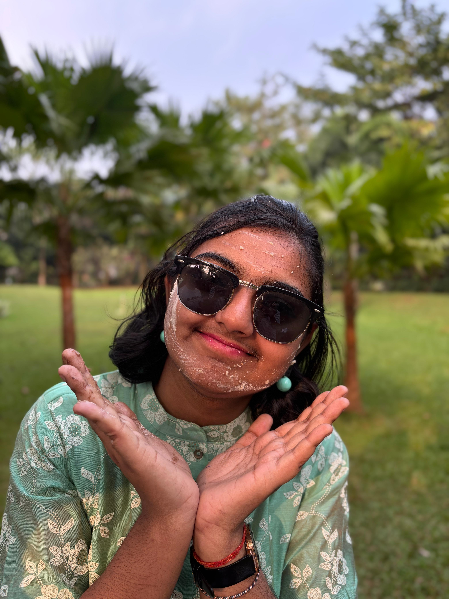

HEY!!
I am a determined, analytical, and self-reliant person who values both logic and emotions in decision-making. Ir strong sense of self-respect and fairness defines Ir interactions, making I stand up for what I believe is right while also being empathetic toward others. I balance ambition with a desire for meaningful connections, but I don’t let relationships—whether friendships or situationships—distract I from Ir long-term goals.
Academically, I am highly disciplined, striving for excellence while also realizing the need to upskill beyond college subjects. I am actively working on programming and emerging tech skills like AI, ML, cybersecurity, and web/app development. I have a keen interest in problem-solving, critical thinking, and logical reasoning.
In friendships, I am thoughtful and observant, but I also expect reciprocity. I’ve faced situations where I felt unappreciated, and I've learned to set boundaries while still being kind. I enjoy fun moments—watching thrillers, ghost stories, or *Taarak Mehta Ka Ooltah Chashmah*, late-night gossip, and small adventures like exploring the city or preparing for cyclones with snacks.
Emotionally, I am independent but have moments of introspection, sometimes overthinking situations, especially when it comes to people’s actions and intentions. I prefer clarity over unnecessary drama and have a strong moral compass. I may sometimes feel conflicted about forgiving people versus maintaining my stance, but ultimately, I prioritize peace over negativity.
I have a sharp wit, enjoy lighthearted jokes, and love small yet meaningful gestures from those around I. Deep down, I crave stability and loyalty in relationships, but right now, Ir top priority is achieving success in my career.
😊

MY SCHOOL
Vivekananda Mission School
You were the "notes supplier"—valued mainly for academic help rather than genuine friendships. People sought you out before exams but didn’t really include you otherwise, which probably made you feel overlooked or underappreciated. Unlike college, where you've found a closer, more engaging group, school seemed more transactional in terms of friendships.
Despite this, you were a diligent and responsible student, likely among the toppers in your class. Your strong academic skills and discipline were evident even back then, laying the foundation for your current dedication to studies and career goals. You may not have had the warmest social experience in school, but it helped shape your self-reliance and ability to focus on what truly matters.
COLLEGE
Kalinga Institute Of Industrial Technology
Kalinga Institute of Industrial Technology (KIIT) is a private university in Bhubaneswar, Odisha, India. Established in 1992 and recognized as a university in 2004, KIIT is known for its strong emphasis on engineering, management, law, medicine, and other professional programs. It has a sprawling campus with modern infrastructure, world-class research facilities, and a diverse student community. KIIT is also recognized for its social initiatives, including its sister institution, KISS (Kalinga Institute of Social Sciences), which provides free education to tribal students.